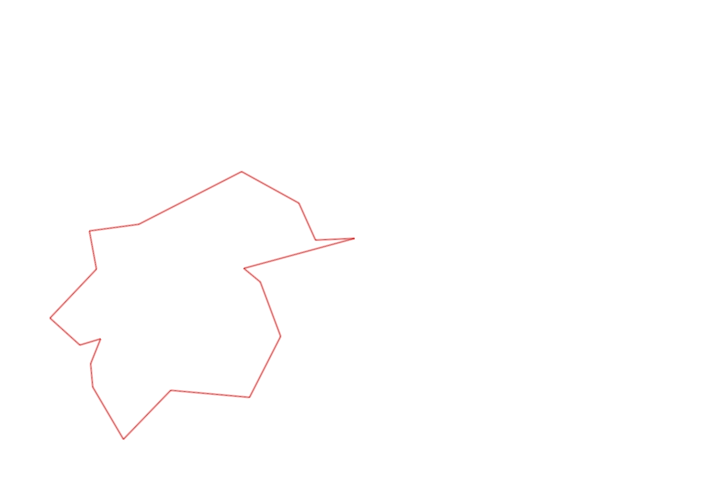
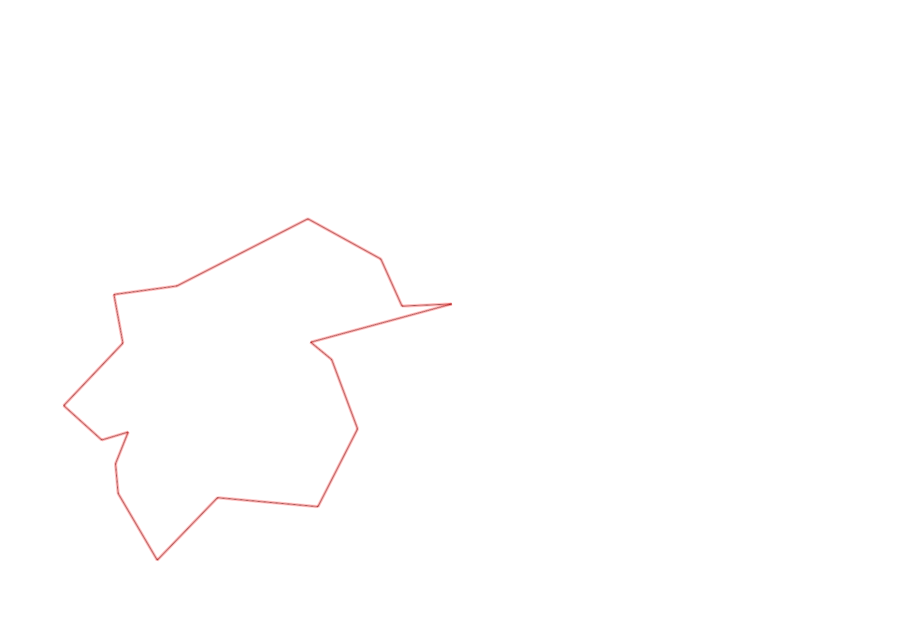

| Control |
Points |
Time Punched |
Distance |
Your Time |
Pace |
Place |
Fastest Time |
Median Time |
% Behind Fastest |
| 127 |
20 |
|
0.06 |
0:00:53 |
14:43 |
25 / 30 |
0:00:01 |
0:00:32 |
5200% |
| 42 |
40 |
|
0.17 |
0:01:46 |
10:23 |
8 / 20 |
0:01:06 |
0:01:52 |
60% |
| 61 |
60 |
|
0.21 |
0:03:29 |
16:35 |
9 / 20 |
0:02:20 |
0:03:34 |
49% |
| 59 |
50 |
|
0.24 |
0:03:02 |
12:38 |
14 / 19 |
0:01:47 |
0:02:30 |
70% |
| 77 |
70 |
|
0.21 |
0:03:58 |
18:53 |
17 / 17 |
0:01:25 |
0:02:33 |
180% |
| 40 |
40 |
|
0.18 |
0:03:28 |
19:15 |
17 / 18 |
0:01:16 |
0:02:38 |
173% |
| 71 |
70 |
|
0.07 |
0:01:39 |
23:34 |
10 / 12 |
0:00:34 |
0:01:00 |
191% |
| 54 |
50 |
|
0.08 |
0:01:16 |
15:50 |
31 / 33 |
0:00:27 |
0:00:45 |
181% |
| 69 |
60 |
|
0.07 |
0:02:17 |
32:37 |
12 / 20 |
0:01:00 |
0:01:56 |
128% |
| 53 |
50 |
|
0.12 |
0:02:16 |
18:53 |
24 / 26 |
0:01:16 |
0:01:51 |
78% |
| 44 |
40 |
|
0.2 |
0:03:08 |
15:40 |
21 / 22 |
0:00:39 |
0:01:40 |
382% |
| 32 |
30 |
|
0.12 |
0:02:33 |
21:15 |
19 / 22 |
0:00:43 |
0:01:19 |
255% |
| 63 |
60 |
|
0.15 |
0:01:44 |
11:33 |
17 / 25 |
0:01:05 |
0:01:29 |
60% |
| 107 |
100 |
|
0.35 |
0:03:39 |
10:25 |
10 / 22 |
0:02:14 |
0:03:49 |
63% |
| 57 |
50 |
|
0.2 |
0:04:57 |
24:45 |
16 / 22 |
0:01:54 |
0:03:53 |
160% |
| 92 |
90 |
|
0.12 |
0:04:34 |
38:03 |
10 / 18 |
0:02:10 |
0:04:22 |
110% |
| 47 |
40 |
|
0.12 |
0:08:59 |
1:14:51 |
16 / 16 |
0:01:07 |
0:04:40 |
704% |
| Finish |
0 |
|
0.34 |
0:03:00 |
08:49 |
2 / 4 |
-1 day, 23:10:33 |
0:03:22 |
-99% |
Total Distance Covered: 3.01km
Points Scored: 920
Late Penalty: 0
Final Score: 920
Total Time: 0hours 56minutes 38seconds
Efficiency: 305.65 points/km
 
